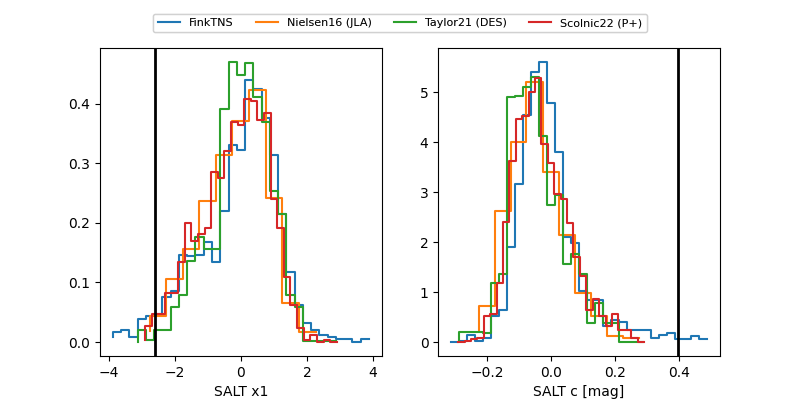

FINK: ZTF25abnzksi
Lasair: ZTF25abnzksi
ALeRCE: ZTF25abnzksi
TNS: 2025wsj
YSE: 2025wsj
ZTF25abnzksi (ztf,fink)
2025wsj (tns,yse)
equatorial (ra, dec) = (320.0330,-3.90779)
galactic (l, b) = (48.0138,-34.58193)

last atlaso=19.63, ztfg=20.31, ztfr=20.15
1 atlaso, 3 ztfg, 7 ztfr detections